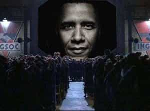

< < < Back
Society Has Awakened From The Collective Delusion Of The Television Age – Return Of Kings
The dominance of television has obviously ended in the early 21st century. People still watch television, but they will never again believe it the way they used to. Television “news” and feel-good storytelling of the type that dominated from the 1940s through the 1990s has become laughable as the Information Age continues to destroy once dominant cultural myths. During this time, the media were able to create the illusion that powerful, elite interests were on our side even as they undermined the nation and laid the groundwork for today’s socialist revolution. They were able to shape beliefs and control all the information the mass mind got to see and hear.
Media-driven myths were hugely successful in keeping people blindly participating in a consumption economy and government tax farm system for half a century, while keeping them largely oblivious as to what was really happening in the world and their government. For 50 years the entire population was essentially mind-controlled by a medium that provided them with sugar-coated fantasies and half truths about reality, and nobody seriously questioned the fact that big business and the government had Americans’ best interests at heart. (Even if they did raise valid concerns, those concerns never entered the Overton Window of the mass mind.) Over this peculiar and interesting period in human history television’s effects of society followed to this ideal, paraphrasing theologian and social critic Reinhold Niebuhr:
Rationality belongs to the cool observer, but because of the stupidity of the average man, he follows not reason, but faith, and the naive faith requires necessary illusion and emotionally potent oversimplifications which are provided by the myth-maker to keep ordinary person on course.
In essence, a centralized communication model was able to delude the masses through mythmaking, putting them to sleep as they blindly put their faith in a “system” that would only be exposed as totally corrupt and amoral after communication shifted online.

Network (1976) depicts a madman news anchor trying to wake up the masses from the delusion of television
The 1976 classic Network perfectly describes the mass delusion the public was under when television was dominant through the fictional news anchor Howard Beale, for which Peter Finch won an Oscar.
But you people sit there, day after day, night after night, all ages, colors, creeds… We’re all you know. You’re beginning to believe the illusions we’re spinning here. You’re beginning to think that the tube is reality, and that your own lives are unreal. You do whatever the tube tells you! You dress like the tube, you eat like the tube, you raise your children like the tube, you even think like the tube! This is mass madness, you maniacs! In God’s name, you people are the real thing! We are the illusion! So turn off your television sets. Turn them off now. Turn them off right now. Turn them off and leave them off! Turn them off right in the middle of the sentence I’m speaking to you now! TURN THEM OFF…
One need look no further than the top television shows of all time to see Niebuhr’s observations and Beale’s frustrations playing out in a business model that made the Big Three networks’ fortunes. In everything from dramas to sitcoms to the nightly news, the plot seldom deviates from the good guys come out on top, the bad guys ultimately lose, truth and justice win the day, the American way is the light of the world, and our politicians, while not infallible are the “good” guys. And, of course, women are virtuous and morally superior to men was another lesson drilled into the American mind, even as men descended back into legalized slavery in a country that pats itself on the back for abolishing slavery. People thought this way for 50 years.
As evidence of how taken in the public was with the media propaganda of the day, the following NBC News documentary takes us all the way back to 1993. In A Day At The Clinton White House, Tom Brokaw hosts an hour long, warm and fuzzy special on the first 100 days of Bill Clinton’s presidency. The sycophantic nature of the documentary is astounding by today’s standards—but in its day nobody batted an eye as to its legitimacy as a piece of “journalism.” However, even as this pablum showcasing Clinton as a demigod was broadcast and taken seriously by a credulous public, a new way of communicating was just beginning to show up in homes around the nation that would later destroy the power of the mythmakers to push propaganda like this down the throats of the masses.
Back in those days, the Internet was only in 10% of homes, and Brokaw makes a brief reference to it towards the end of his knob polishing session in the Clinton White House. But that humble invention would eventually destroy the centralized communication business model he was a part of as well as the dominance of corporate and government mind control in America and the world.
Just look back in awe as to what passed as legitimate reporting even as recently as the 1990s.
Waking Up
Even though one of today’s alternative media majors, Matt Drudge, got his start during the Clinton regime and the genesis of alternative narratives was underway, according to Gallup, trust in the media peaked in 1998 and 1999, the era of Clinton. Despite the fact people started using the Internet en masse in the 1990s, there wasn’t a lot of information challenging political and cultural narratives of the puppet masters in America at that time. People still tuned into and trusted television news and newspapers, and believed their government had good intentions, no matter if they were selling out American jobs via NAFTA, turning the White House into a “coke den” with mistresses running in and out of it according to Secret Service Agent Gary Byrne, and making shady deals with the Chinese.
But, the Clinton presidency would be the last to be able to fully leverage Big Media to control political and cultural narratives and keep the public in the dark about the reality of their political machinations. The end of trust in talking heads and network news was drawing near. Ironically, Howard Beale imploring the public to stop trusting everything they saw on television in 1976 has become reality 40 years later. That shift started in earnest during the Bush administration.
As Bush and his band of Neocons attempted to use their tried and true method of mythmaking to keep the military-industrial complex running in high gear, a major platform of his administration became selling a false narrative about weapons of mass destruction in order to invade Iraq.
The feat of creating myths in order to legitimize the war would have been easier to pull off in the Television Age, but unfortunately for politicians and their spinmeisters people were increasingly communicating online. Thanks to tireless work of bloggers and truth seekers, a mountain of evidence grew proving the Bush administration pushed the WMD narrative knowing they invented it out of whole cloth. As reported by Washington’s Blog:
Everyone knew the WMD claims were fake. For example, Tony Blair – the British Prime Minister – knew that Saddam possessed no WMDs. If America’s closest ally Britain knew, then the White House knew as well. And the number 2 Democrat in the Senate -who was on the Senate intelligence committee – admitted that the Senate intelligence committee knew before the war started that Bush’s public statements about Iraqi WMDs were false. If the committee knew, then the White House knew as well.
But we don’t even have to use logic to be able to conclude that the White House knew. Specifically, the former highest-ranking CIA officer in Europe says that Bush, Cheney and Rice were personally informed that Iraq had no WMDs in Fall 2002. Former Treasury Secretary O’Neil – who was a member of the National Security Council – said: In the 23 months I was there, I never saw anything that I would characterize as evidence of weapons of mass destruction.
The CIA warned the White House that claims about Iraq’s nuclear ambitions (using forged documents) were false, and yet the White House made those claims anyway.
The truth is much of the information exposing the WMD fraud would have never surfaced—and more importantly persisted—if people were not communicating online. The media performed their usual drive-by reporting and glazed over the issue, giving it a half-assed treatment, then another sensation came up and the WMD fraud fell into the talking heads’ memory hole. But, it was given new life by documentation and video people could call up years or decades later with just a few keystrokes. This type of information would have never been so easily available before. The exposure of the WMD fraud is perhaps the most important case of the internet causing a significant deviation from the “official” narrative as the Information Age replaced the Television Age.
So, why was the internet more important than the liberal media when it came to exposing the WMD fraud? Even though the media is 90% Democrat, one must realize “journalists” are typically intellectually lazy groupthinkers who do not challenge authority unless it becomes profitable for them to do so. The business runs on emotion as much as politics, which is why they grilled one of their own in the 90s with the Lewinsky scandal but glazed over a huge scandal that could have been much worse politically for Bush than the other scandals they tormented him with. The Intercept reported on the failure of the mainstream media to report on this issue properly in the article Twelve Years Later, US Media Still Can’t Get Iraqi WMD Story Right:
Thanks in part to the failure of centrist and liberal media to explain this clearly, it’s now cemented as an article of faith on much of the right that Iraq was concealing weapons of mass destruction.
Without the internet, its reasonable to believe the WMD narrative could have been much more successful in influencing public opinion to this day. We certainly wouldn’t be discussing it right now without the internet. The Bush administration nearly pulled the feat off anyway, despite the liberal press!

Newsweek and other leftist media have openly worshiped Obama from day one
As Obama replaced Bush, trust in the media continued to wane. During the 2008 campaign, it became painfully obvious the media was in the tank for Obama, from Chris Matthews’ obsequious thrill running up my leg commentary to a complete and total failure to emphasize Obama’s connections to terrorists like Bill Ayers, his Muslim upbringing, his shady association with Mr. Goddamn America, Jeremiah Wright, and call into question his lack of any significant legislative or political successes while Illinois Senator. All these counter narratives only survived because of the internet. Perhaps more than any other event, the 2008 Presidential Election exposed the Marxist media in the minds of the American public as the leftist hacks they are.
During Obama’s 2008 campaign in which the media were least partially successful in turning him into the Messiah, two narratives—an “official” narrative pushed by mainstream media, and a popular narrative arising organically from free and open mass communication online—emerged and only grew further apart over two terms of a far left Obama presidency. The exposure of the mainstream media as nothing but propagandists who push Marxism instead of living up to their vaunted reputation as the Fourth Estate, horribly failing in their primary task of providing an unbiased account of events, was underway. From Obamacare to Fast and Furious to the latest fanning of the flames of racial division in the country, the “official” and popular narratives continue to grow farther apart.

The “official” and popular narratives have once again clashed in the 2016 Presidential campaign. The successful campaign of Donald Trump to with the GOP nomination would never have been possible in the days of centralized, one-size-fits-all communication. It’s obvious the leftist media seethed at Trump and hated him from day one, but it did not matter because they had so discredited themselves their narrative was not the only one people knew of or had to listen to. They could just turn off the TV, download a podcast, or read a blog to get a more factual version of events rather than having a talking head read them something from the New World Order script.
The elite despise the fact the masses have awakened from the mass delusions they were spinning. Rather than try to balance their reporting, mainstream outlets have doubled down on their Marxist narratives. Despite what elitists in the media will say, as Ernest Hemingway said: The truth has a certain ring to it. The old media regularly tries to discredit new media, and even insinuate the people who subscribe to the new media version of events are everything from idiots to racists for not swallowing suicidal leftist talking points.
One group of mainstream media executives even shamelessly told two whistle blowers embroiled in a legal suit for making them report false stories: We paid $3 billion for these stations. We’ll decide what the news is. Other possible media driven myths of the past 50 years, now being called into question by legitimate questions and facts include:
- A worldwide ban on DDT based on the book Silent Spring is being challenged by authors, scientists, and even journalist John Stossel
- A coming Ice Age pushed in the 1970s which encouraged countries to stop using fossil fuels failed to materialize
-
AIDS was supposed to become a heterosexual pandemic, it remains confined to homosexual risk groups and CDC’s own statistics say there is a nearly as low as a 1 in 10,000 chance of vaginal transmission through normal heterosexual intercourse—in other words more sex than some people have in a lifetime would be required to contract it this way
- The ozone hole over Antarctica was going to fry the world, a hole a number of scientists are now saying has always been there because of the way rays from the sun produce ozone and that oceans produce more chlorine annually than man ever did
- The coming global warming Armageddon is said to be caused by the gas that all life on earth needs to survive, CO2, and is only fixable by ludicrous tax on an element on the periodic table, carbon
- The current Bee-pocalypse narrative says the world will starve to death unless the world eliminates certain pesticides and some suggestions call for eliminating microwave i.e. cellular and other forms of communication, while other sources are saying bee numbers were manipulated to create another problem out of whole cloth
- The media continues to fudge gun statistics as pointed out last week with the fact gun homicides are at an all-time low while over half the public believes gun violence has increased
- The media operate in a way that creates profit by stirring up racial problems and hysteria as evidenced by its BLM narratives and facts which directly contradict the narrative of “racist white cops” such as a police officer is 18 times more likely to be killed by a black suspect than vice versa
These worrisome stories are only the tip of the iceberg of possible media myths that have been perpetrated on the American public. No wonder the establishment is up in arms, they need citizens to be pliable sheep that listen to their dictates and buy their products. They definitely do not want a public capable of figuring out how much they’re being lied to, but the internet has yielded just that. George Carlin put it best:
You have owners. They own you. They own everything. They own all the important land. They own and control the corporations. They’ve long since bought and paid for the Senate, the Congress, the state houses, the city halls. They got the judges in their back pockets and they own all the big media companies, so they control just about all of the news and information you get to hear. They got you by the balls…They don’t want a population of citizens capable of critical thinking. They don’t want well-informed, well-educated people capable of critical thinking. They’re not interested in that. That doesn’t help them. That’s against their interests.
As proof the elite want to crush the popular narrative arising from the so-called unwashed masses the elite openly hate, a Harvard-educated propagandist, and son of a CEO James Traub of Foreign Policy magazine published It’s Time for the Elite to Rise Up Against the Ignorant Masses just last month, an article befitting a Mao or Hitler regime in that it openly calls for stripping the rights of voters to influence public policy.
Look for the two narratives to grow ever more disparate in the coming years and decades. The mainstream media will look increasingly disconnected from reality and ridiculous as they spew talking points from society’s puppet masters, while we the people talk amongst ourselves in a manner that produces a phenomenon seen in the book The Wisdom of Crowds: Why the Many Are Smarter Than the Few. Our version of reality may differ from that written by a small elite, but nonetheless an increasing number of people believe the “unwashed” and unvarnished truth over the elite’s sugar-coated myths. Importantly, the emergence of the popular narrative is credited with helping the Brexit movement successfully challenge an organizing Soviet…er…European Union.
That leaves us with this conclusion. The fantasies of the Television Age have been replaced with the harsh truths and nightmares of reality. It’s a cruel, corrupt, and often evil world we live in. The deal is, it always has been that way, even when we were collectively put to sleep and tranquilized by the mass delusion created by television. Where this new chapter in human history ends nobody knows, but the world will never be the same now that large numbers of people are awake, and they’re angry.
 If you like this article and are concerned about the future of the Western world, check out Roosh's book Free Speech Isn't Free. It gives an inside look to how the globalist establishment is attempting to marginalize masculine men with a leftist agenda that promotes censorship, feminism, and sterility. It also shares key knowledge and tools that you can use to defend yourself against social justice attacks. Click here to learn more about the book. Your support will help maintain our operation.
If you like this article and are concerned about the future of the Western world, check out Roosh's book Free Speech Isn't Free. It gives an inside look to how the globalist establishment is attempting to marginalize masculine men with a leftist agenda that promotes censorship, feminism, and sterility. It also shares key knowledge and tools that you can use to defend yourself against social justice attacks. Click here to learn more about the book. Your support will help maintain our operation.
Read More: How Higher Education Feeds Female Delusion